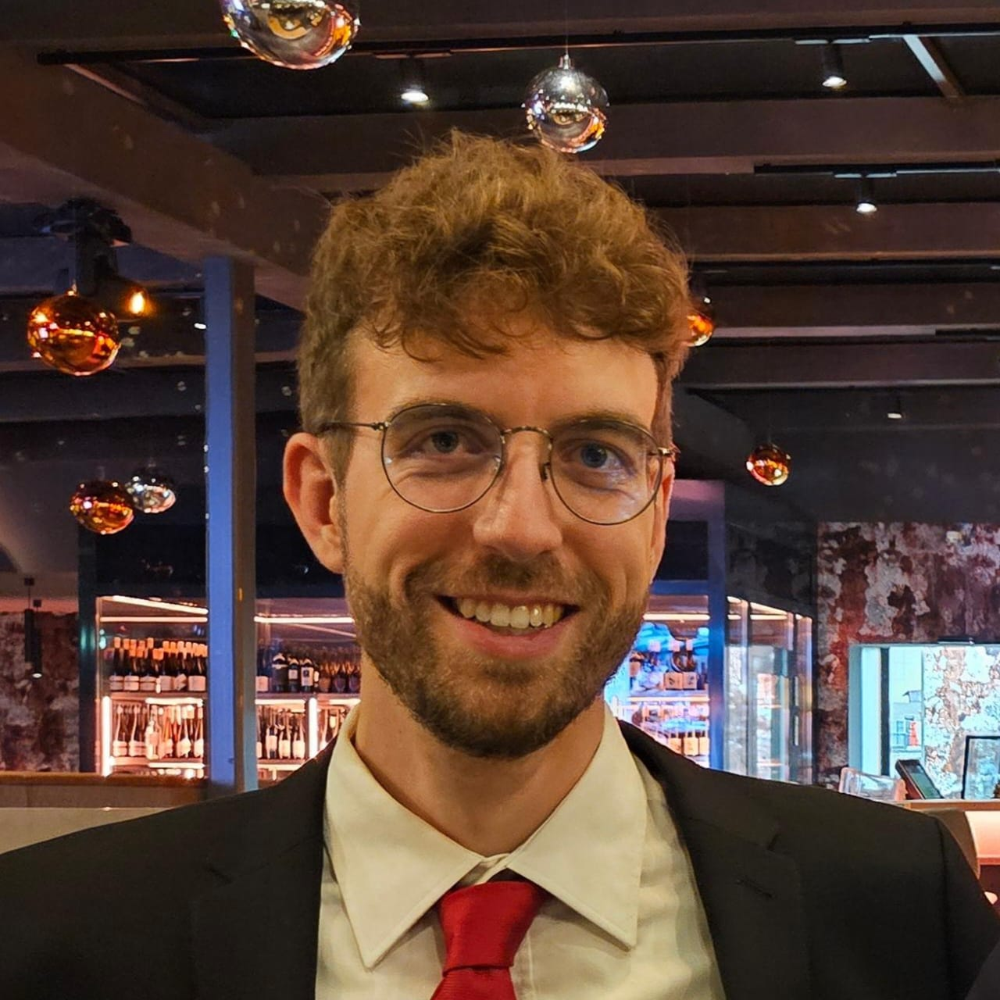

Current work
I work at the Center for Modelling and Simulation at the University for Continuing Education Krems while pursuing a doctorate in Physics at the University of Vienna. My work has focused on computational materials science since 2023.
Computational materials scientist and PhD researcher working on machine learning, optimization, and scientific software for permanent-magnet research.

I work at the Center for Modelling and Simulation at the University for Continuing Education Krems while pursuing a doctorate in Physics at the University of Vienna. My work has focused on computational materials science since 2023.
I am interested in machine learning and optimization for materials design, particularly uncertainty-aware models for permanent magnets. More about my background and interests is available in my profile.
Methods and tools I use across my research.
Research on uncertainty-aware machine learning for permanent-magnet modeling, from composition-based surrogate models to microstructure-sensitive prediction.
Read via DOI ↗